step1：メモ帳の機能洗い出し
memopad.exe が「メモ帳の機能はそのまま」を満たすために、本家メモ帳に何があるのかを先に全部並べる。調査日：2026-09-06
1. 調査対象と調べ方
| 項目 | 内容 |
|---|---|
| OS | Windows 11 Pro（ビルド 26200） |
| メモ帳 | Windows メモ帳（Microsoft Store 版 Microsoft.WindowsNotepad）バージョン 11.2607.14.0 |
C:\Windows\notepad.exe | 約 360 KB のランチャー。実行すると Store 版メモ帳が起動する。Windows 10 までの「クラシック メモ帳」はこの環境には存在しない |
| 調べ方 | PowerShell から UI Automation でメニュー項目・設定項目・ダイアログの部品を列挙し、あわせて撮影スクリプトでスクリーンショットを自動生成した |
docs/tools/capture-notepad.ps1 で一括生成している。メモ帳を起動し直し、メニュー展開や検索バーの表示をキー操作で再現しながら撮影するので、メモ帳が更新されたら再実行すれば画像を揃え直せる。
2. 画面の構成
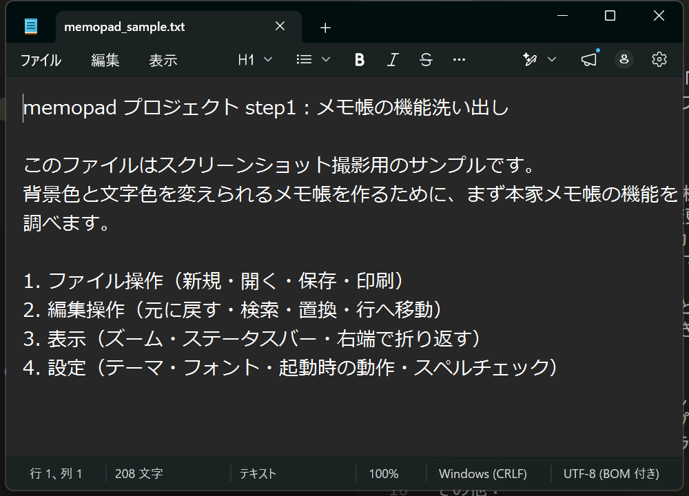
| 領域 | 内容 |
|---|---|
| タブ バー | 複数ファイルをタブで開く。タブにはファイル名と閉じるボタン、右端に「＋」（新しいタブ）。未保存の変更があるタブは●印、タイトルバーは先頭に * が付く |
| メニューバー | 「ファイル」「編集」「表示」の 3 つ。Alt を押すとアクセスキーが表示される |
| 書式ツールバー | 見出し／リスト／太字／斜体／取り消し線／リンク／その他（表・書式設定のクリア）。マークダウン タブでのみ有効になる（テキスト タブでは無効表示） |
| 右上のボタン | 手書きツール（Copilot による記述・リライト・要約）、新着情報、ユーザー アバター（Microsoft アカウント）、設定（歯車） |
| テキスト領域 | 本文。右クリックでコンテキスト メニュー |
| ステータスバー | 左から「行, 列」「文字数」「テキスト／マークダウン（現在のモード）」「ズーム %」「改行コード（Windows (CRLF) など）」「エンコード（UTF-8 など）」。表示メニューで非表示にできる |
3. メニュー一覧
UI Automation で列挙した項目とショートカットをそのまま載せる。括弧内はアクセスキー（Alt のあとに押す文字）。
3.1 ファイル
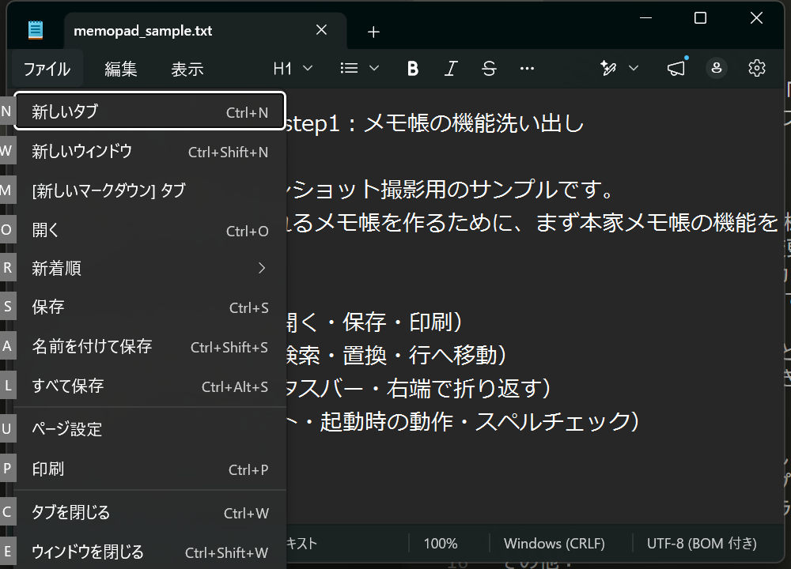
| 項目 | ショートカット | メモ |
|---|---|---|
| 新しいタブ (N) | Ctrl+N | 空のタブを追加 |
| 新しいウィンドウ (W) | Ctrl+Shift+N | 別ウィンドウを開く |
| [新しいマークダウン] タブ (M) | — | マークダウン モードのタブを追加 |
| 開く (O) | Ctrl+O | ファイルを開くダイアログ |
| 新着順 (R) | — | 最近使ったファイルのサブメニュー（最大 10 件＋「一覧を消去する」） |
| 保存 (S) | Ctrl+S | |
| 名前を付けて保存 (A) | Ctrl+Shift+S | エンコードを選べる（7 節） |
| すべて保存 (L) | Ctrl+Alt+S | 全タブを保存 |
| ページ設定 (U) | — | 用紙・余白・ヘッダー／フッターの共通ダイアログ |
| 印刷 (P) | Ctrl+P | 印刷ダイアログ |
| タブを閉じる (C) | Ctrl+W | 未保存なら「保存／保存しない／キャンセル」を確認 |
| ウィンドウを閉じる (E) | Ctrl+Shift+W | |
| 終了 (X) | — |
3.2 編集
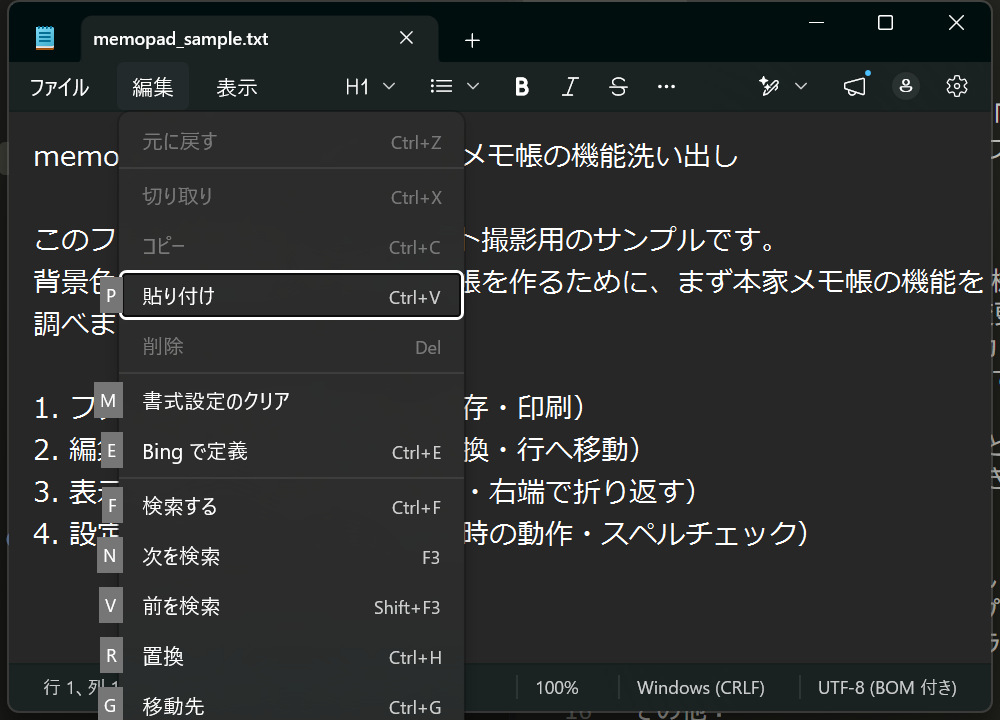
| 項目 | ショートカット | メモ |
|---|---|---|
| 元に戻す (U) | Ctrl+Z | やり直しは Ctrl+Y（メニューには無い） |
| 切り取り (T) | Ctrl+X | |
| コピー (C) | Ctrl+C | |
| 貼り付け (P) | Ctrl+V | |
| 削除 (L) | Del | |
| 書式設定のクリア (M) | — | マークダウンの装飾を外す（ツールバーでは Ctrl+Space） |
| Bing で定義 (E) | Ctrl+E | 選択語を Bing で検索 |
| 検索する (F) | Ctrl+F | 右上に検索バーが出る（4 節） |
| 次を検索 (N) | F3 | |
| 前を検索 (V) | Shift+F3 | |
| 置換 (R) | Ctrl+H | 検索バーに置換欄が加わる |
| 移動先 (G) | Ctrl+G | 「行に移動」ダイアログ |
| すべて選択 (A) | Ctrl+A | |
| 日付と時刻 (D) | F5 | カーソル位置に現在日時を挿入 |
| フォント (O) | — | 設定ページのフォント欄へ移動する |
3.3 表示
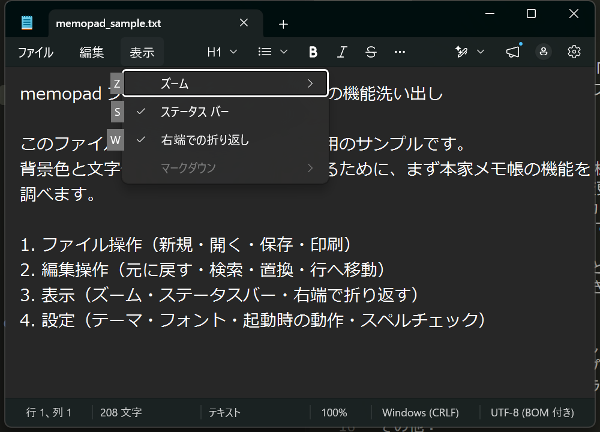
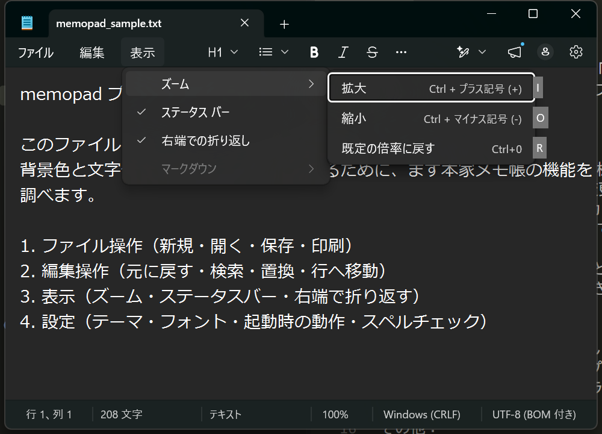
| 項目 | ショートカット | メモ |
|---|---|---|
| ズーム (Z) ＞ 拡大 | Ctrl++ | ステータスバーに倍率（%）が出る |
| ズーム ＞ 縮小 | Ctrl+- | |
| ズーム ＞ 既定の倍率に戻す | Ctrl+0 | |
| ステータス バー (S) | — | 表示／非表示の切り替え |
| 右端での折り返し (W) | — | ウィンドウ幅で折り返す。既定値は設定ページで決める |
| マークダウン (V) ＞ 書式付き (S)／構文 (M) | — | 現在のタブを装飾表示（書式付き）と Markdown そのまま（構文）で切り替える（6 節） |
4. 検索・置換・行に移動・右クリック
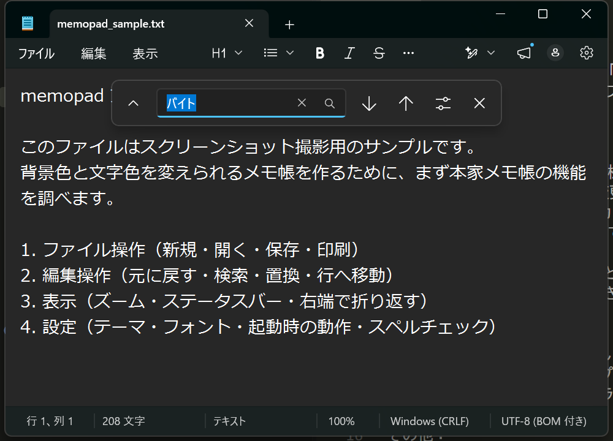
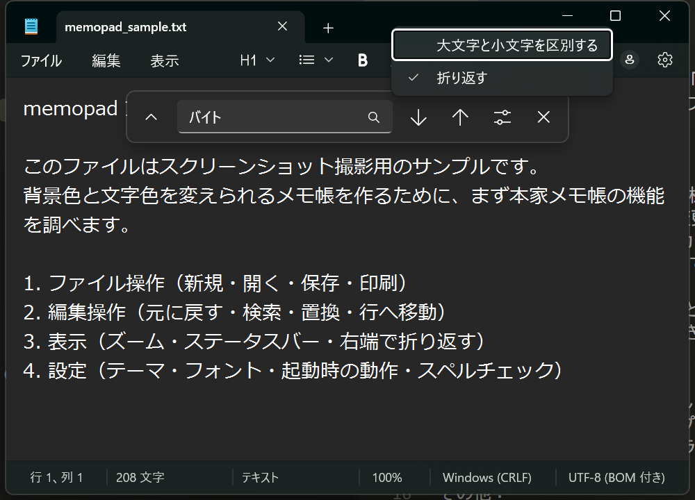
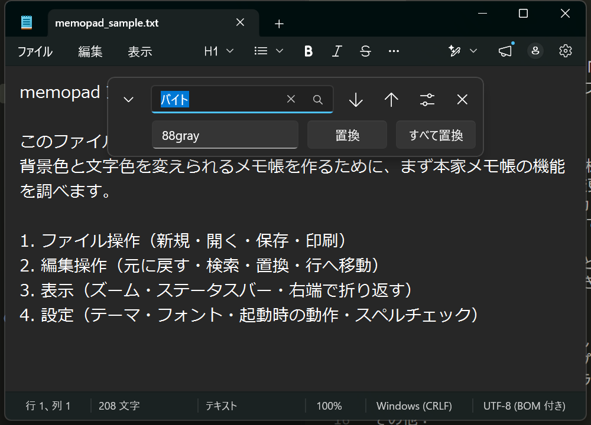
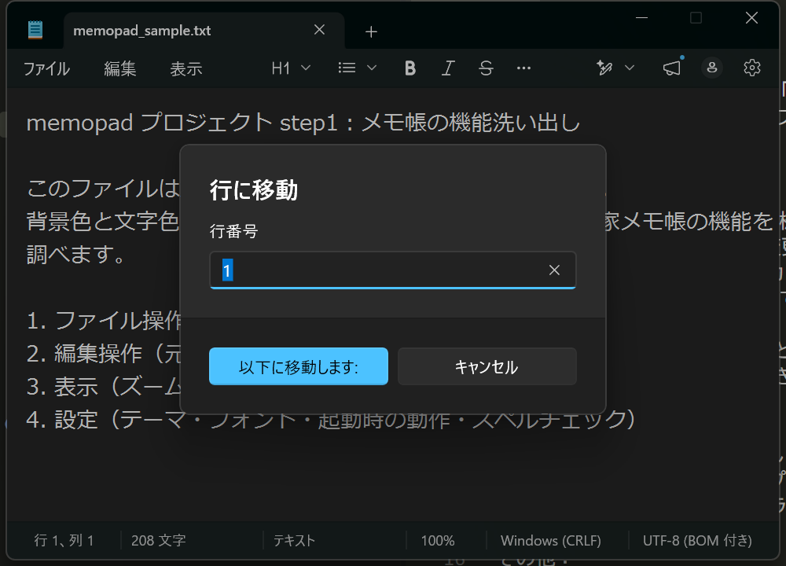
| 機能 | 部品 |
|---|---|
| 検索バー | 検索語の入力欄、下へ検索、上へ検索、その他のオプション（大文字と小文字を区別する／折り返す）、置換オプションを開く、閉じる |
| 置換バー | 検索バー＋置換語の入力欄、置換、すべて置換 |
| 行に移動 | 行番号の入力欄、「以下に移動します:」ボタン、キャンセル |
| 右クリック メニュー | 元に戻す、切り取り／コピー／貼り付け（選択時）、テーブルの挿入、Bing で定義、記述、リライト、カスタム リライト、要約、スペル チェック、表示と Unicode |
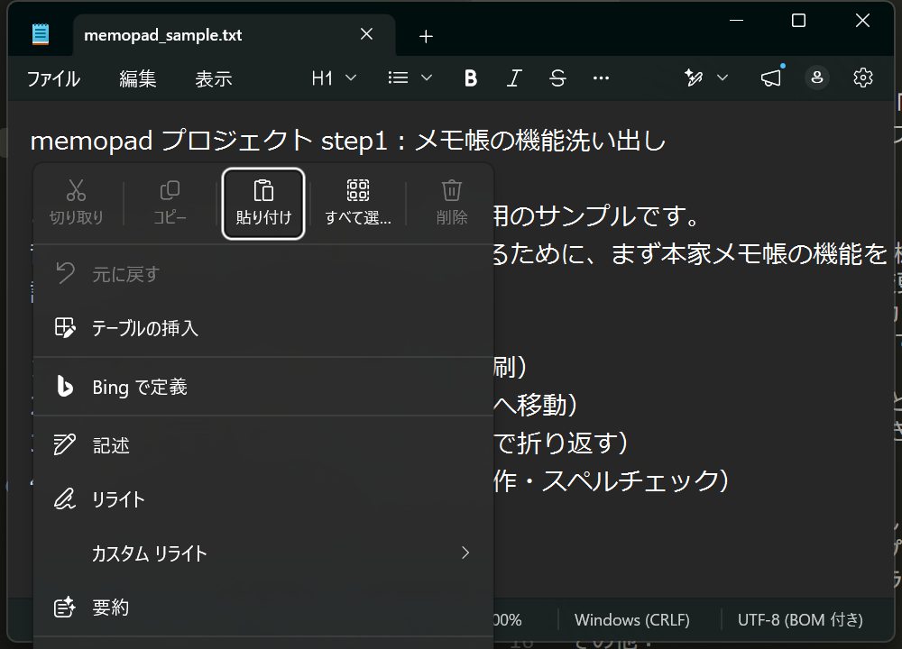
5. 設定ページ
右上の歯車で開く。クラシック メモ帳で「書式」メニューにあったフォントや右端で折り返す設定は、ここに移っている。
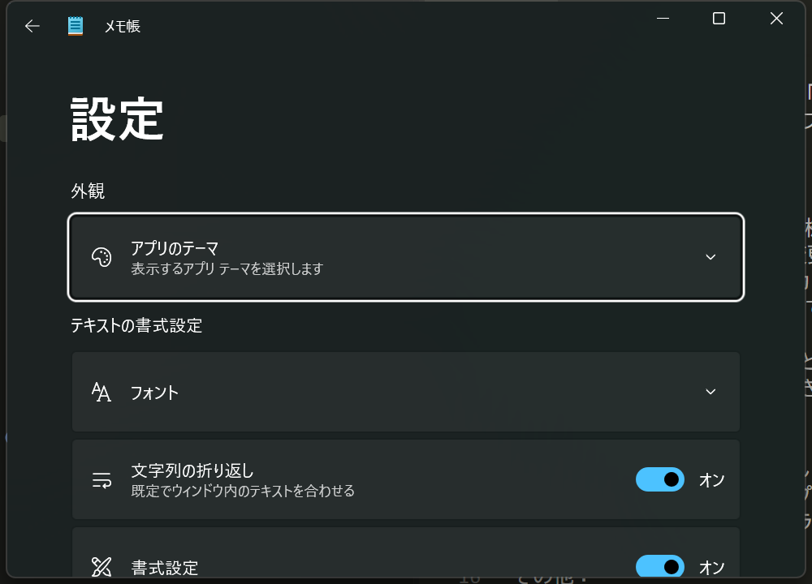
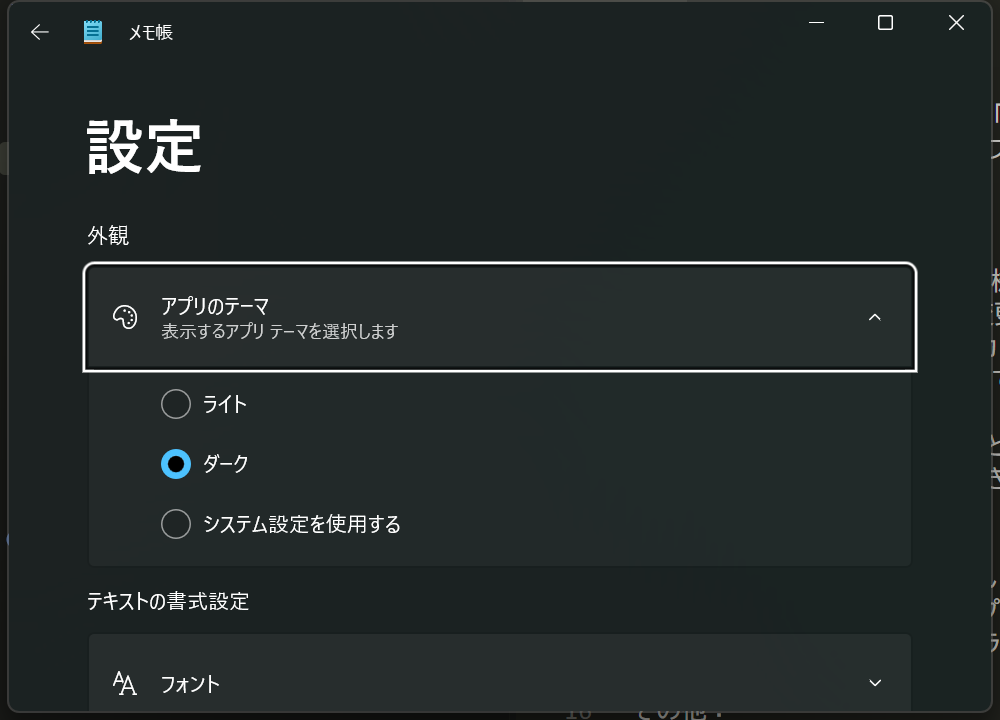
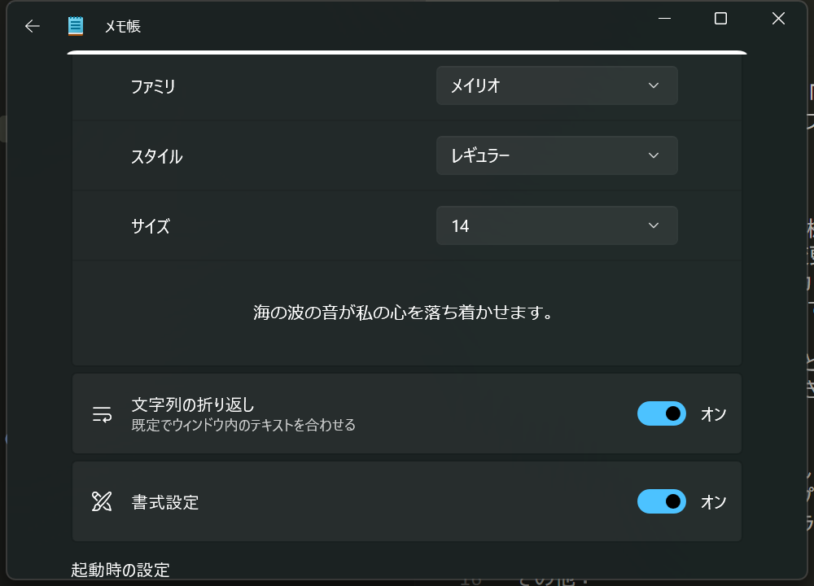
| 分類 | 設定 | 選択肢・内容 |
|---|---|---|
| 外観 | アプリのテーマ | ライト／ダーク／システム設定を使用する |
| テキストの書式設定 | フォント ＞ ファミリ | インストール済みフォントから選択（入力補完あり） |
| フォント ＞ スタイル | 標準／斜体／太字／太字 斜体 など（フォントに依存） | |
| フォント ＞ サイズ | 8, 9, 10, 11, 12, 14, 16, 18, 20, 22, 24, 26, 28, 36, 48, 72（直接入力も可）。プレビュー文「海の波の音が私の心を落ち着かせます。」 | |
| 文字列の折り返し／書式設定 | 折り返しの既定値の ON/OFF、マークダウン書式設定機能の ON/OFF | |
| 起動時の設定 | ファイルを開く方法 | 新しいタブで開く／新しいウィンドウで開く |
| メモ帳の起動時 | 前のセッションを続行／新しいセッションを開始し未保存の変更を破棄 | |
| 最近使ったファイル | ON/OFF | |
| スペル チェック | スペル チェック | 全体の ON/OFF と拡張子別（.txt、.md/.markdown、.srt/.ass、.lrc、.lic）の ON/OFF |
| 自動修正 | ON/OFF（入力ミスを自動修正） | |
| 高度な機能 | 手書きツール | Copilot 機能の ON/OFF |
| このアプリについて | バージョン表示 | ライセンス条項・サービス規約・プライバシー・サードパーティ ソフトウェアへのリンク、フィードバックの送信、ヘルプ |
6. マークダウン機能
「[新しいマークダウン] タブ」で開いた直後は Markdown をそのまま書く「マークダウン構文」表示になっている（ステータスバーの「テキスト」が「マークダウン構文」に変わる）。表示 ＞ マークダウン ＞ 書式付き に切り替えると装飾表示になり、書式ツールバーが使えるようになる。
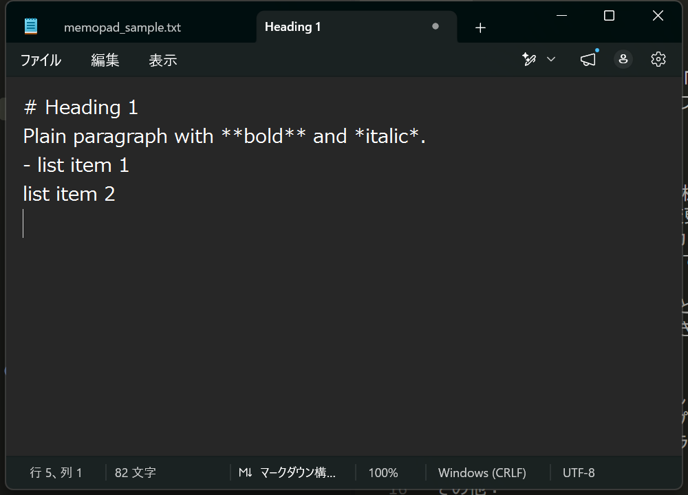
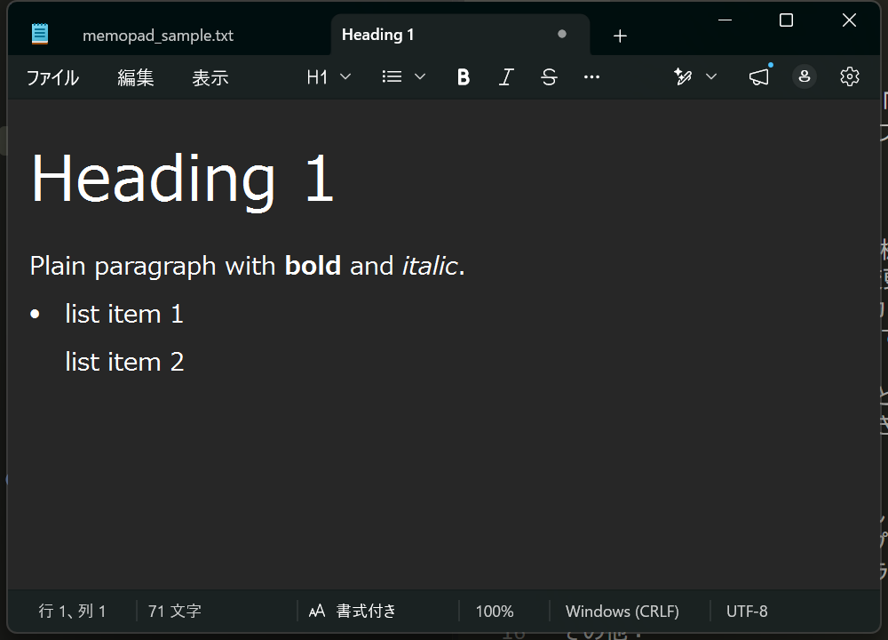
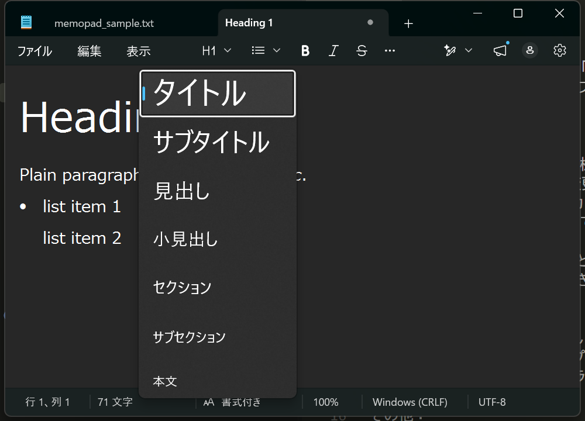
| ツールバー | 内容 | ショートカット |
|---|---|---|
| 見出し | タイトル、サブタイトル、見出し、小見出し、セクション、サブセクション、本文 | — |
| リスト | 箇条書き、番号付きリスト、インデントを増やす／減らす | — |
| 太字／斜体／取り消し線／リンク | 選択範囲の装飾 | Ctrl+B／Ctrl+I／Ctrl+Shift+X／Ctrl+K |
| その他のオプション | 表の挿入、書式設定のクリア | クリアは Ctrl+Space |
| 表示 ＞ マークダウン | 「書式付き」（装飾表示）と「構文」（Markdown のまま）の切り替え | — |
7. ファイルの保存・タブ・セッション
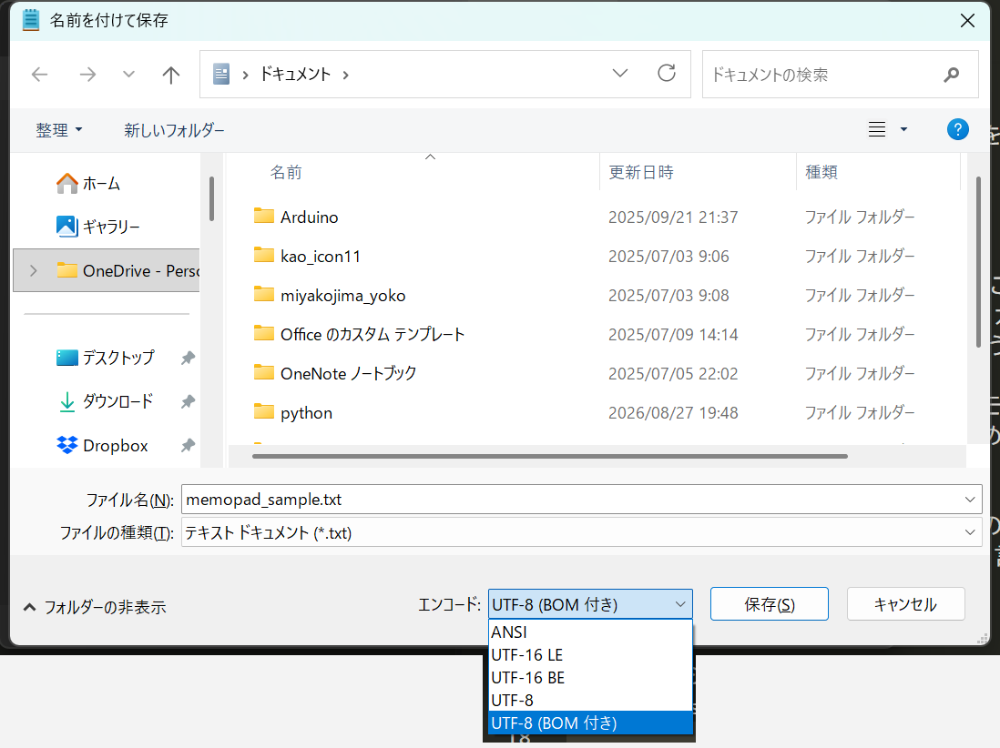
| 項目 | 内容 |
|---|---|
| エンコード | ANSI、UTF-16 LE、UTF-16 BE、UTF-8、UTF-8 (BOM 付き)。開いたファイルのエンコードはステータスバーに表示され、保存時に選び直せる |
| 改行コード | Windows (CRLF)／Unix (LF)／Macintosh (CR) を判別してステータスバーに表示する |
| ファイルの種類 | テキスト文書 (*.txt)／すべてのファイル |
| 未保存タブを閉じる | 「保存」「保存しない」「キャンセル」の確認が出る |
| セッションの復元 | 未保存のタブも含めて次回起動時に復元する（設定「メモ帳の起動時」で無効化できる） |
| 最近使ったファイル | ファイル メニューの「新着順」に最大 10 件 |
| 複数ファイル | タブで開く。ドラッグで並べ替え、別ウィンドウへ切り離しができる |
8. AI 機能（Copilot）
右上の「手書きツール」と右クリック メニューから使う。Microsoft アカウントでのサインインとクレジットが必要で、環境によってはローカル AI モデルのダウンロードを求められる。
| 項目 | ショートカット |
|---|---|
| 記述（プロンプトから文章を生成） | Ctrl+Q |
| リライト／カスタム リライト | Ctrl+D |
| 要約 | Ctrl+M |
| 短くする／長くする／スタイルの変更／書式設定の変更 | — |
| Bing で定義 | Ctrl+E |
9. ショートカット一覧
| キー | 機能 | キー | 機能 |
|---|---|---|---|
| Ctrl+N | 新しいタブ | Ctrl+Z / Ctrl+Y | 元に戻す／やり直し |
| Ctrl+Shift+N | 新しいウィンドウ | Ctrl+X / C / V | 切り取り／コピー／貼り付け |
| Ctrl+O | 開く | Ctrl+A | すべて選択 |
| Ctrl+S | 保存 | Ctrl+F | 検索 |
| Ctrl+Shift+S | 名前を付けて保存 | F3 / Shift+F3 | 次を検索／前を検索 |
| Ctrl+Alt+S | すべて保存 | Ctrl+H | 置換 |
| Ctrl+P | 印刷 | Ctrl+G | 行に移動 |
| Ctrl+W | タブを閉じる | F5 | 日付と時刻 |
| Ctrl+Shift+W | ウィンドウを閉じる | Ctrl++ / - / 0 | 拡大／縮小／既定の倍率 |
| Ctrl+B / I / K | 太字／斜体／リンク（マークダウン） | Ctrl+Shift+X | 取り消し線（マークダウン） |
| Ctrl+Space | 書式設定のクリア | Ctrl+E | Bing で定義 |
| Ctrl+Q / D / M | 記述／リライト／要約（Copilot） | Alt | メニューのアクセスキー表示 |
10. memopad で再現する範囲（仕分け）
「メモ帳の機能はそのまま」を、テキスト エディタとして日常的に使う機能はすべて再現すると解釈し、Microsoft アカウントやクラウド前提の機能は対象外にする。2026-09-06 にユーザーと確認し、すべての区分を確定した（各行の方針欄に確定日を記す）。検討として残る項目は無い。
| 区分 | 機能 | 方針 |
|---|---|---|
| 必須 | ファイル：新規／開く／保存／名前を付けて保存／印刷／ページ設定／最近使ったファイル | エンコード（ANSI、UTF-8、UTF-8 BOM、UTF-16 LE/BE）と改行コードの判別・表示も含める |
| 必須 | 編集：元に戻す／やり直し／切り取り／コピー／貼り付け／削除／すべて選択／日付と時刻 | |
| 必須 | 検索／置換（大文字小文字の区別・折り返し・上下方向）／行に移動 | 本家と同じショートカットを割り当てる |
| 必須 | 表示：ズーム（Ctrl+±、Ctrl+0）／ステータスバー／右端で折り返す | ステータスバーの項目（行・列、文字数、ズーム、改行コード、エンコード）も同じ並びにする |
| 必須 | 設定：フォント（ファミリ／スタイル／サイズ）、折り返しの既定値、テーマ | テーマは少なくともライト／ダーク |
| 必須（追加機能） | 背景色・文字色の変更 | 標準色 16 色のパレット＋カラーピッカー。設定は次回起動時も保持する |
| 必須 | インストーラ | Inno Setup。アンインストールも含む |
| 必須 | タブ（複数ファイル） | 2026-09-06 確定。タブで複数ファイルを開く。新しいタブ、タブを閉じる、タブの切り替えを備える |
| 必須 | 未保存の確認ダイアログ | 2026-09-06 確定。未保存のまま閉じたら「保存／保存しない／キャンセル」を出す。タブを閉じるとき、ウィンドウを閉じるとき、終了するときに働く |
| 対象外 | セッション復元 | 2026-09-06 確定。未保存タブを次回起動時に復元する動作は作らない。起動時は常に新規の空タブから始める |
| 対象外 | マークダウン モード（書式ツールバー、装飾表示） | 2026-09-06 確定。「メモ帳をシンプルなエディタとして使う」用途からは外れるため作らない |
| 対象外 | スペル チェック／自動修正 | 2026-09-06 確定。日本語入力では効果が薄いため作らない |
| 対象外 | Copilot（記述・リライト・要約）、Bing で定義、ユーザー アバター、新着情報 | Microsoft アカウントやオンライン サービスに依存するため作らない |
TextBox でも足りるが、タブとズームが必須になったこと、フォントや色の指定・ズームをデータバインディングで扱えることから WPF を採用する（step2 で決定）。詳しい比較は step2 の備忘録 に記す。